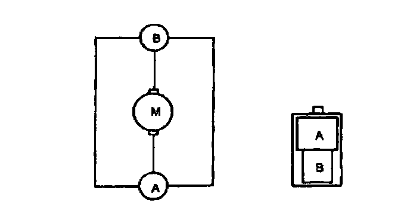
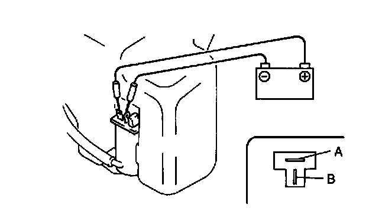

Windshield Washer Motor: Testing and Inspection
WINDSHIELD WASHER MOTOR INSPECTION1. Disconnect the windshield washer motor connector.
Except Canada/Canadian Models With ABS:

Except Canada/Canadian Models Without ABS:

2. Connect battery positive voltage to the terminal B and ground to the terminal A of the motor.
3. Verify that the windshield washer motor operates.
4. If the motor does not operate, replace the windshield washer motor.